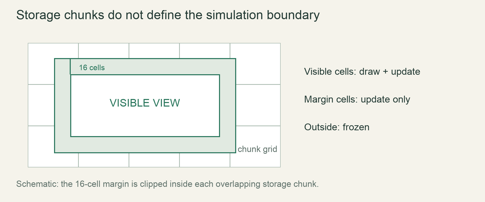

M4 / A persistent worldLesson 79 of 100 · ~5 min reading + build time
Stream changed and unchanged chunks
Evict a changed chunk only after the exact saved revision has been acknowledged, without blocking camera movement.
Previously: Keep generator and save versions distinct. Keep that working result available before starting this lesson.
Why we need this now
The early cache kept changed chunks forever because it could not safely discard them. With persistence available, eviction becomes a small protocol: dirty state, queued snapshot, acknowledged revision, then release of memory.
Your result: Evict a changed chunk only after the exact saved revision has been acknowledged, without blocking camera movement.

01Identify the stale-acknowledgement bug
A chunk is edited to revision 4 and queued for saving. Before the writer finishes, the player edits it again to revision 5. The writer reports revision 4 saved. If the cache merely sees “save finished” and drops the chunk, revision 5 is lost.
Attach a revision counter to the chunk and capture that revision with the queued payload. Acknowledgement clears dirty status only if the acknowledged revision equals the current live revision. A newer live revision still needs saving. Coordinate identity alone is not enough.
02Treat eviction as a state transition
An unchanged regenerable chunk may be dropped immediately. A changed chunk becomes an eviction candidate, is snapshotted/queued, and stays resident until safe persistence is confirmed. Active chunks are protected from eviction. If the cache is over budget while writes are pending, apply the documented queue/memory fallback rather than discarding edits.
Use a resident-memory cap and an explicit accounting of pending snapshots. Otherwise the cache can appear bounded while the writer queue holds many extra cloned chunks. LRU means least recently used among eligible candidates, not blindly the oldest map entry.
03Coordinate loading and cancellation
A camera can request a chunk and leave before the worker returns. Label each request with world epoch and chunk identity; install only results still belonging to the current world. Deduplicate outstanding requests so the same missing chunk does not spawn a new job every frame.
For changed chunks, load persisted data. For unchanged absent chunks, regenerate with the world’s generator version. Keep the per-cell active rectangle separate from resident status: loading a chunk does not mean simulating all of its cells.
04Measure the whole panning pipeline
A useful stress run pans for thirty minutes while making periodic edits. Record resident chunk bytes, pending writer bytes, queue lengths and foreground frame spikes. A cache-size printout alone cannot prove the total memory bound.
The focused experiment below models revision acknowledgement, the most important correctness edge before integrating disk operations. Combine it with the bounded channels and committed writer already built. A failed write must leave the chunk dirty and available for retry or explicit error handling.
Read → predict → run → change
Walk through the working example
Complete focused experiment — save as examples/lesson_079.rs, then run cargo run --example lesson_079 from game/.
Download this worked example ↧
#[derive(Debug)]
struct Resident { revision:u64, saved_revision:u64, active:bool }
impl Resident {
fn dirty(&self)->bool {self.revision!=self.saved_revision}
fn acknowledge(&mut self,written:u64) {
if written==self.revision {self.saved_revision=written;}
}
fn may_evict(&self)->bool {!self.active && !self.dirty()}
}
fn main() {
let mut c=Resident {revision:4,saved_revision:3,active:false};
let queued=c.revision;
c.revision=5;
c.acknowledge(queued);
assert!(!c.may_evict());
c.acknowledge(5);
assert!(c.may_evict());
println!("stale acknowledgement cannot discard revision 5");
}Read what each part does
- The written revision describes a captured payload, not necessarily the current chunk.
- An active chunk remains protected even after its current revision is saved.
- A production revision counter needs an overflow policy; this short fixture isolates normal acknowledgement ordering.
Expected result
stale acknowledgement cannot discard revision 5Exact version numbers, paths and compiler wording may differ. Compare the behavior and file locations, not incidental output formatting.
Prediction · repair · transfer
Exercises you actually do
Write a prediction or make an attempt before opening a solution. Use the hint if stuck; then compare reasoning and verify with the stated check. A different implementation is fine when it satisfies the same contract.
Replay the race
Queue revision 8, edit to 9, receive acknowledgement 8. Is eviction allowed?
Need a hint?
Compare acknowledged and live revisions.
Worked solution
No. The acknowledgement proves only revision 8 is persisted. Keep revision 9 dirty, retain its data and arrange a new save job.
How to verify your result
may_evict stays false.
Account for hidden memory
Resident cache is 64 MB, but ten queued snapshots are 16 MB each. What is the actual problem?
Need a hint?
The cache counter excludes owned copies in the queue.
Worked solution
At least 224 MB is owned by these two components before other memory. Bound snapshot queues and report their bytes; a 64 MB resident cap alone is not a total-memory guarantee.
How to verify your result
A stress trace includes both resident and queued memory.
Handle a failed write
The writer returns disk-full for the newest snapshot.
Need a hint?
A failed write is not a save acknowledgement.
Worked solution
Keep the chunk dirty and resident or safely retained by the pending snapshot policy. Report the error and pause/retry according to the approved memory policy, never pretend eviction is safe.
How to verify your result
The edit remains recoverable after the simulated failure.
When it goes wrong
Start with the observed symptom. Change one assumption at a time instead of pasting fixes until the error disappears.
Recent edits disappear after panning
What is happening: A stale write acknowledgement clears newer dirty state.
Try this: Compare snapshot revision with live revision before clearing or evicting.
Memory grows although the cache cap holds
What is happening: Background queues own additional snapshots or duplicate requests.
Try this: Bound and account for all queues, not only the resident map.
Panning stutters on every eviction
What is happening: Disk encoding/write happens on the frame path.
Try this: Capture bounded work and hand it to the single writer without blocking main-loop queue operations.
Explain it without the example
Why must background results carry their requested chunk identity or generation?
Reasoning to compare
By completion, the camera or world may have changed. Identity prevents stale work from replacing the wrong current state.
Self-check only: test a prediction or ask your tutor if anything still feels arbitrary.
Finish with evidence
Thirty minutes of panning keeps resident memory bounded within the documented margin, without missing edits or long foreground stalls.
Make one small variation without copying: predict it, run it and explain any difference. On another day, repeat one exercise from memory before starting the next lesson. Ask your tutor about any step you can execute but cannot explain.
This is an attempt marker, not a grade. Learning records are written only after demonstrated understanding.
Primary sources for this lesson
Use sources to verify the mechanism. The lesson itself supplies the instructions; the links are not a substitute for teaching them.